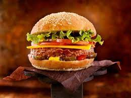

Burger

Description
A burger, or hamburger, is a beloved American dish now enjoyed worldwide. It features a seasoned ground meat patty (commonly beef) grilled to perfection and sandwiched between two soft, toasted buns. Toppings like lettuce, tomatoes, pickles, onions, cheese, and condiments such as ketchup and mustard add flavor and texture. Customizable and versatile, burgers can be made with various meat or plant-based patties, allowing for endless combinations to suit different tastes. Often served with fries or coleslaw, burgers are a popular choice in fast-food chains, diners, and casual dining establishments, providing a delightful fusion of juicy meat, delicious toppings, and a satisfying bun.
Ingredients
- Cheese
- Buns
- Condiments
- Ketchup
- Mustard
- Mayonnaise
- Onions
- Patty
Steps
- Take the vegetable mash and gently shape it into patties, about 1/2 to 3/4 inch thick. Avoid overworking the meat to keep the patties tender.
- Season both sides of the patties with salt and pepper or your preferred seasoning blend. Optionally, you can add other spices or herbs to enhance the flavor.
- Preheat a grill or a skillet over medium-high heat. Grease the cooking surface with a little oil to prevent sticking.
- Place the patties on the hot grill or pan and cook for about 4-5 minutes on each side, or until they reach your desired level of doneness (medium-rare, medium, well-done, etc.).
- If desired, place a slice of cheese on top of each patty during the last minute of cooking. Let it melt and become gooey.
- While the patties are cooking, lightly toast the burger buns on the grill or in a toaster.
- Lay the cooked patty on the bottom half of the bun. Add your desired toppings, such as lettuce, tomato, onion, pickles, bacon, or any other optional ingredients.
- Spread ketchup, mustard, mayonnaise, or any other favorite sauces on the top half of the bun.
- Place the top bun on the assembled burger. Serve the burger hot and enjoy it with your favorite side dishes, like fries or a salad.